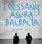

곡설명

2011 한국 음악계의 교과서이자 본보기로 자리할 리쌍의 명반 [AsuRa BalBalTa]
리쌍의 거침없는 질주본능, 상상을 뛰어넘는 앨범으로 하반기 음악계를 평정한다!
속이 꽉 찬 트랙들로 리쌍의 재발견을 보여주는 [AsuRa BalBalTa]. 내가 웃는 게 아니야, 발레리노, 광대 등 세대를 막론하고 대중들의 기억과 가슴 속에 자리하고 있는 메가 히트곡들의 소유자이자 뮤지션들의 영원한 숙제인 음악성과 대중성의 양립이 무엇인지를 정확히 제시하고 있는 리쌍이 2년 만에 정규 7집 앨범 [AsuRa BalBalTa(아수라발발타)]를 발표한다.